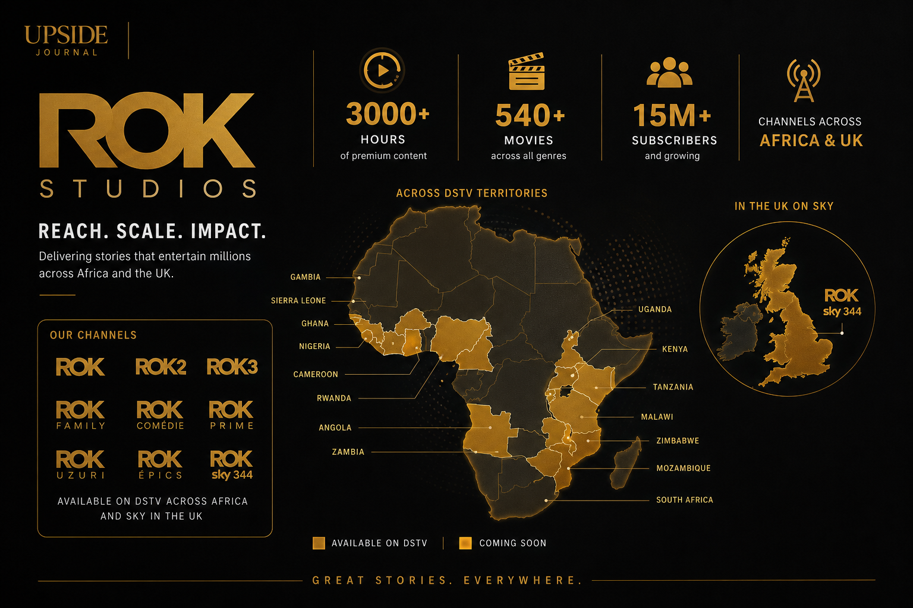

Mary Njoku started acting at seventeen. By her late twenties, she was running one of Nigeria's most prolific production companies. By thirty-four, she had sold it to a French media giant in what was reported as the biggest media acquisition in Sub-Saharan African history.
Now, at forty-one, the founder and CEO of ROK Studios — a Canal+ subsidiary — has been named to the LIONS Scholarship Jury at Cannes Lions 2026. She will help select the next generation of creative talent from around the world, drawing on a career that has produced over 3,000 hours of original Nollywood content and transformed how African stories reach global audiences.
It is a remarkable trajectory. But then, nothing about Mary Njoku's career has followed the conventional script.
From Amuwo Odofin to Nollywood's Front Lines
Mary Remmy Njoku grew up in Amuwo Odofin, Lagos — the sixth of eight children. She attended local schools, held a passion for performance since secondary school, and joined the Nollywood industry in 2003 at the age of seventeen.
Her acting debut came in 2004 with Home Sickness, where she appeared alongside Chioma Chukwuka Akpotha. For several years, Njoku built her craft through multiple roles, steadily gaining experience in an industry that was — and still is — one of the most competitive in Africa.
The breakthrough arrived in 2011 with Blackberry Babes, a Nollywood blockbuster that brought her to mainstream prominence. But Njoku was already thinking beyond the screen. Between 2011 and 2013, she produced iROKtv, a YouTube platform that covered Nollywood events, Afrobeats culture, and celebrity interviews — an early bet on digital distribution that would define her next chapter.
In 2012, she attended London Film Academy to study film production — specifically Movie Magic Budgeting and Scheduling — funded by her husband, Jason Njoku, who had founded iROKO Partners, Africa's leading digital distribution platform for Nollywood content.
The education wasn't academic indulgence. It was preparation for what came next.
Building ROK Studios
In August 2013, Mary Njoku founded ROK Studios. The premise was ambitious but clear: build a production company that could produce high-quality Nollywood content at an industrial scale, combining the storytelling instincts of a seasoned actress with the operational discipline of a production executive.
ROK Studios delivered on that promise with numbers that remain staggering:
• 3,000+ hours of original content produced — movies and television series
• 540+ movies and 25+ original TV series by the time of its acquisition in 2019
• 500+ hours of new content produced annually
• Notable productions: Husbands of Lagos, Festac Town, Single Ladies, Thy Will Be Done, Losing Control, Body Language

In 2015, Njoku premiered Thy Will Be Done at BFI IMAX London — the first Nollywood film premiere ever held in IMAX. That same year, she became Chief Content Officer at IROKO Partners, adding strategic oversight of the continent's largest Nollywood streaming library to her production responsibilities.
By 2016, ROK had launched its own television network: ROK on Sky in the UK and ROK on DStv across Africa, bringing Nollywood content to millions of households across two continents. In 2018, she expanded with ROK2, ROK3, and ROKGH (a dedicated Ghanaian channel), building a multi-channel entertainment network that no other Nigerian producer had achieved.
The company also moved into animation through ROK Animations, producing Story Time — a series based on Nigerian tales and legends — spanning three seasons.
The Canal+ Acquisition
In July 2019, French media conglomerate Canal+ acquired ROK Studios from iROKO Partners. The deal was reported as the largest media acquisition in Sub-Saharan Africa to that date, a landmark moment for Nollywood's commercial credibility on the global stage.
What made the acquisition notable wasn't just its scale — it was its terms. Canal+ kept Mary Njoku as Managing Director and CEO, with what the company's Chief Content Officer Fabrice Faux described as “maximum autonomy and creative freedom.”
“We will provide administrative support, finance and equipment,” Faux said at the time, “but otherwise it is our intention to give Mary maximum autonomy and creative freedom.”
That statement reflected a reality the global media industry was beginning to acknowledge: the most authentic African content comes from African creators who understand their audiences intimately. ROK Studios wasn't being acquired for its infrastructure — it was being acquired for Mary Njoku's creative vision and production capability.
Under Canal+ ownership, ROK has continued producing at scale. The studio's catalogue now exceeds 3,000 hours, and it remains among the most prolific production houses on the continent. In 2023, Njoku co-created Dr. Love with fellow Nollywood star Uche Jumbo, demonstrating that the acquisition hadn't dulled the creative edge.
The Cannes Lions Appointment
The LIONS Scholarship is one of Cannes Lions' flagship programmes for developing emerging creative talent. Each year, a global jury selects young creatives who receive full access to the festival — attending sessions, workshops, and networking opportunities that can reshape careers.
As a Scholarship Jury Member, Mary Njoku will evaluate candidates alongside creative directors and executives from agencies worldwide, including representatives from VML Belgium, Incubeta, Dentsu Japan, and Ogilvy Africa.
The appointment signals something important about the evolving definition of “creativity” at Cannes Lions. Njoku's career doesn't fit neatly into the agency world that has historically dominated the festival. She is an actress, a producer, a studio executive, and a network builder — someone whose creative output is measured not in campaigns but in thousands of hours of content that reaches millions of viewers across Africa and the diaspora.
Her presence on the jury brings three dimensions that are often underrepresented at Cannes:
1. The producer's perspective: Most Cannes jurors come from advertising and marketing. Njoku brings the perspective of someone who has built, funded, and scaled original creative content at industrial volumes — a fundamentally different relationship with creativity than crafting campaigns.
2. African storytelling at the decision table: Nollywood is the world's second-largest film industry by volume. Having a Nollywood executive on a Cannes Lions jury acknowledges that the future of global creativity isn't exclusively Western — it's being written in Lagos, Accra, and Nairobi.
3. The founder's journey: From teenage actress to running a subsidiary of one of Europe's largest media companies, Njoku's story is itself a case study in creative ambition and entrepreneurial execution. That lived experience will inform how she evaluates the emerging talent coming through the Scholarship programme.
The Bigger Picture
Mary Njoku's career is a rebuke to the idea that Nollywood is somehow separate from the “serious” business of global media and technology. She built a production empire that attracted the attention — and the investment — of one of Europe's most powerful media companies. She did it from Lagos, not Hollywood. And she did it while the industry she was building in was itself being invented.
When she sits on the LIONS Scholarship Jury at Cannes this June, she won't just be selecting tomorrow's creative talent. She'll be doing it with the credibility of someone who has been building creative infrastructure at scale for over a decade — in one of the world's most demanding markets.
For Cannes Lions, that's exactly the perspective the room has been missing.
FAQ
Who is Mary Njoku?
Mary Remmy Njoku is a Nigerian actress, producer, and CEO of ROK Studios, a Canal+ subsidiary. She founded ROK Studios in 2013 and has overseen the production of over 3,000 hours of original Nollywood content, including 540+ movies and 25+ original TV series.
What is ROK Studios?
ROK Studios is one of Nigeria's largest production companies, specialising in Nollywood films and TV series. Acquired by French media giant Canal+ in 2019 in the biggest media acquisition in Sub-Saharan Africa, ROK produces over 500 hours of original content annually and operates television channels across the UK and Africa.
What is Mary Njoku's role at Cannes Lions 2026?
She has been named to the LIONS Scholarship Jury for Cannes Lions 2026, where she will help select emerging creative talent from around the world for the festival's flagship development programme.
What is the Canal+ acquisition of ROK Studios?
In 2019, French media conglomerate Canal+ acquired ROK Studios from iROKO Partners, reported as the largest media acquisition in Sub-Saharan Africa at the time. Mary Njoku was retained as Managing Director and CEO with full creative autonomy.
This article is part of Upside Journal's “Nigerian Tech at Cannes Lions 2026” series, profiling the startups and founders shaping Nigeria's technology landscape. Read more at theupsidejournal.com.